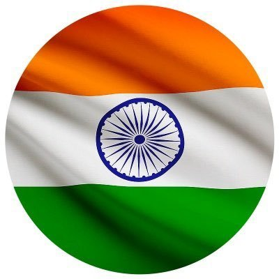

India, country that occupies the greater part of South Asia. Its capital is New Delhi, built in the 20th century just south of the historic hub of Old Delhi to serve as India’s administrative centre. Its government is a constitutional republic that represents a highly diverse population consisting of thousands of ethnic groups and likely hundreds of languages. With roughly one-sixth of the world’s total population, India is the second most populous country, after China.